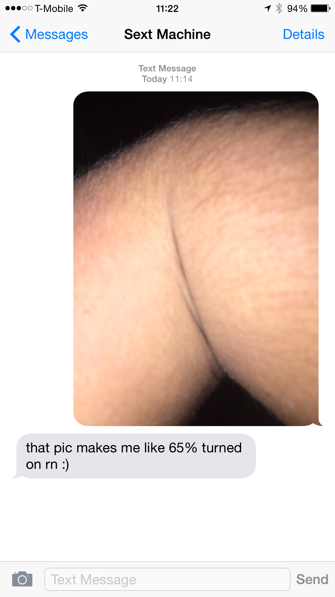

Sext Machine
Text ';)' to (669) 333-SEXT (7398) to play.

The Sext Machine loves to sext. Specifically, it loves getting dirty pictures. But it's not so great at figuring out what is and isn't dirty...
Sext Machine is an SMS-based game exploring the frailty of algorithms and human sexuality. The game is played by taking and sending photos with your phone's camera that look like, but aren't, sexually explicit.
Photos sent to Sext Machine are run through a nudity-detection algorithm. You're scored based on how well you've tricked the bot into thinking you sent it something x-rated.
You can play by texting ';)' to (669) 333-SEXT (7398).
It's totally free, but regular SMS/MMS fees will apply.
Don't have a US phone number capable of sending MMS? There's a web-based version available at http://sextmachine.lazerwalker.com. You should use the SMS-based version if you can, though.
Press for Sext Machine
"I just spent the past 15 minutes trying to fool a bot into thinking blurry phone pics of my elbow crease were steamy photos of the world's greatest butt." -Kotaku
"Algorithmically, my inner nostril is sexier than my balls." -Fast Company
"There was something kind of sexy about receiving a message that told me exactly what percentage of arousal this robot was feeling." -Bustle
Sext Machine has also been featured in publications such as Boing Boing (Offworld), Polygon, and Gizmodo.